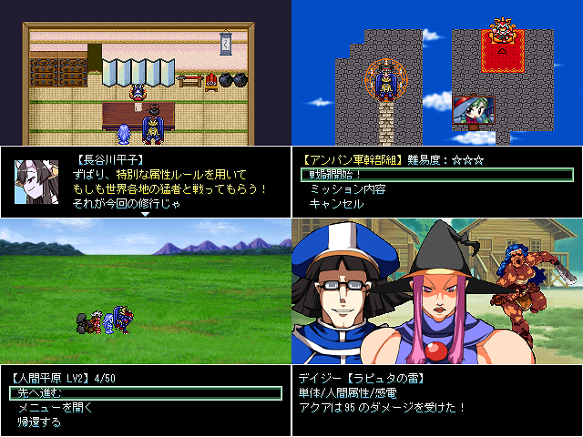

| No.07 MOSHIMO CLASH -THE VSシリーズ- β版 | |
|
 | |
| 作成ツクール：RPGツクール2000 | |
| ジャンル：デフォ戦＆新属性搭載テスト | |
| 作者名：悪派手ジャスティスの会 | |
| ＜配信/動画投稿/翻訳＞可 | |
＜作者のコメント＞今回は広告に騙されてやり始めたソシャゲの属性を搭載してみました。 主な仕様 主要属性は全部で6つ！そして今回は弱点を突かれると2倍ダメージだ！ プレイアブルキャラは全部で10人！有利な属性をぶつけて優位に立て！ 基本戦闘はエネミー50方式！それぞれの相手にミッションが用意されてるぞ！ デフォ戦に自信があるなら挑んでみよう！（一部相手を除きます） 勝てなくなったら修練所で鍛えろ！その内ゴリ押しでも攻略できるように！ 概念礼装は修練場のガチャでランダム入手！10連もあるでよ！ いずれはあの悪役集団も乱入…！？ β版ですが一応本編エンディングまでは行ける予定です（DLCっぽいのは来年予定） | |
管理人から にぎやかそうなデフォ戦スキーの為のゲーム。礼装ってFateなの！？勝てない人用の救済措置があるのはいいぞ。 にぎやかそうなデフォ戦スキーの為のゲーム。礼装ってFateなの！？勝てない人用の救済措置があるのはいいぞ。 |
|
| ダウンロード(242mb:1/12更新) 感想掲示板 | |
| 前の作品 次の作品 / TOPへ戻る | |